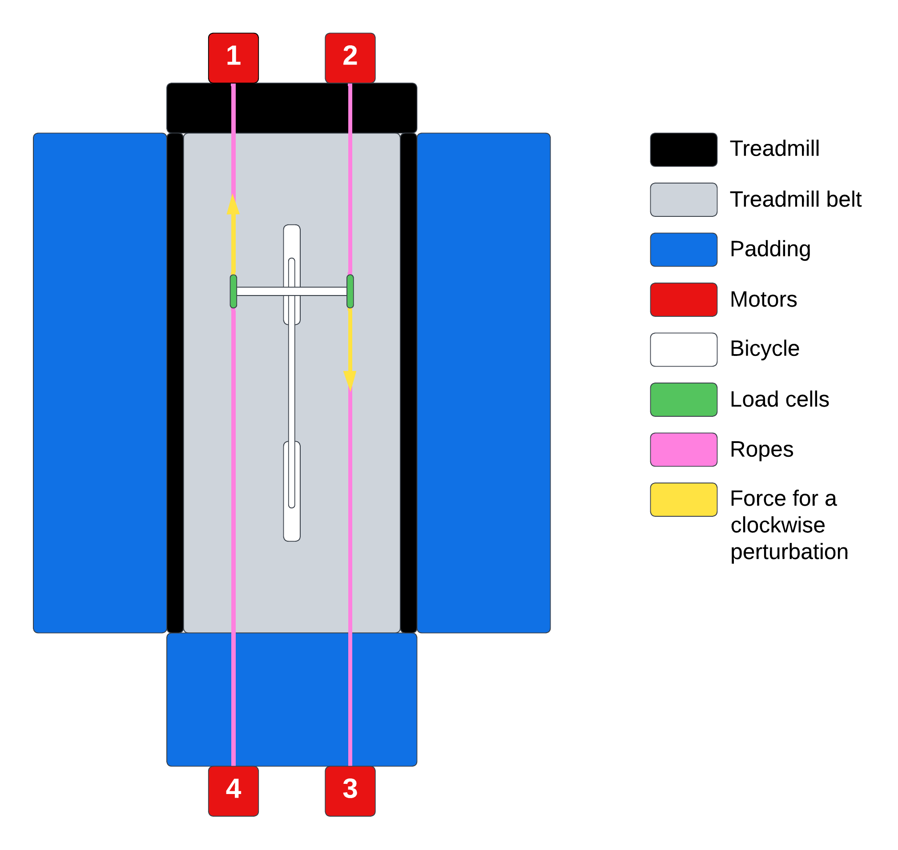
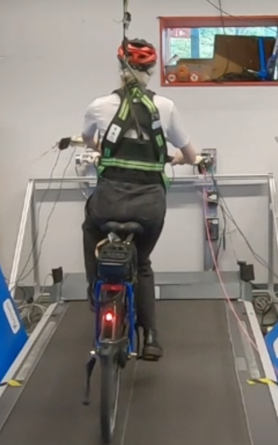
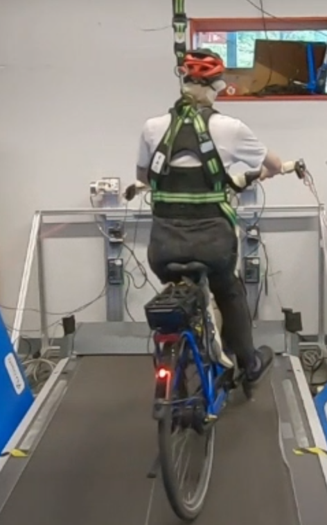
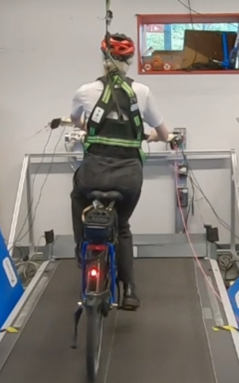
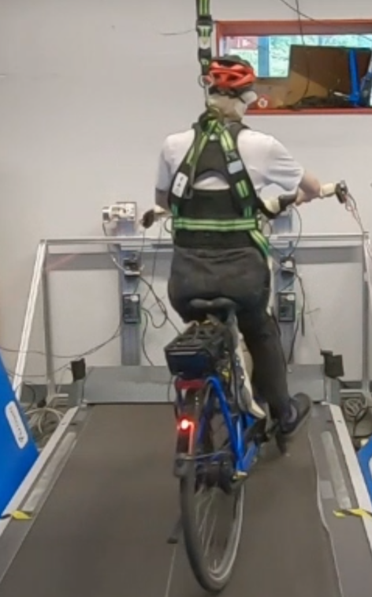

![Uncontrolled (upper row), controlled with \kappa=3.9 (middle row), and controlled with \kappa=5.2 (lower row) root locus of the eigenvalue components (real: solid, imaginary: dashed) plotted versus speed for the linear Carvallo-Whipple bicycle model without the inertial effect of a rigid rider (left) and with a rigid rider (right). Vertical dotted and dotted-dashed lines indicate the two speeds we perform experiments at: 6 km h−1 and 10 km h−1. The grey shaded region is the linear stable speed range. Black stars are experimentally identified weave mode decay and frequency.](figures/balance-assist-eig-vs-speeds.png)
Department of BioMechanical Engineering
Delft University of Technology
Delft, The Netherlands
Correspondence: j.k.moore@tudelft.nl
bicycle, fall prevention, automatic control, stability
A steering motor with roll rate feedback can stabilize the bicycle-rider system.
Every bicycle rider has their own perturbation resistance threshold.
Automatic balance assistance reduces probability of falling while riding at 6 km h−1.
Balance assistance could reduce single-actor falls at the limits of control authority.
Single-actor bicycle crashes are associated with a surprisingly large percentage of reported serious injuries in The Netherlands (>80%) and values range between 50% and 95% in other surveyed countries (Wegman and Schepers 2024). Utriainen, O’Hern, and Pöllänen (Utriainen, O’Hern, and Pöllänen 2023) report that slippery surfaces, simple loss of control, and engagement with a curb, pothole, or bollard are the most common fall types in the seven reported countries. Most of these types involve perturbations that result in loss of balance. At low speeds, from start up to typical cruising speeds, bicycles are not self-stable and can be challenging for the rider to balance. Low speed crashes may be reduced if the bicycle was self-stable at these speeds by relieving the rider of some of their necessary control activity. Bicycles can be mechanically modified to lower the speeds at which they are self-stable (Åström, Klein, and Lennartsson 2005) and since the 1980s it has been known that applying a motor actuated steering torque proportional to the vehicle’s roll angular rate 1 can stabilize a single-track vehicle down to very low speeds (Ruijs and Pacejka 1986). If automatic control of steering can stabilize a bicycle, it may reduce the control required from the rider to successfully manage balancing tasks much like natural high speed self-stability already does. We have developed a balance-assisting bicycle, Figure 1, based on these principles and hypothesize that it helps the rider in situations in which they are likely to fall.
Riders fall when their control authority is not sufficient to maintain a stable vehicle state. There are many real world scenarios that can put the vehicle into an uncontrollable state. External forces applied to the vehicle or rider are one such scenario type and natural examples include wind gusts, handlebars colliding with a neighbor’s, a bag swinging from the handlebar, or simply hitting a bump in the road. To assess our balance assisting bicycle, we subject the rider to perturbations at the handlebar, which can easily cause a rider to fall. From a mechanics perspective, it is not particularly important how or where the perturbation is applied but that it results in forcing the bicycle-rider system into an unrecoverable state, as all forces acting on a dynamical system can be resolved into an equivalent force and torque of a couple at any location in the system (Kane and David A. Levinson 1985). We chose to perturb the handlebar because of this superposition principle, because it was practical, and because it required a low force to cause a fall.
In this paper 2, we investigate whether an automatically controlled bicycle, that is stable in a large low speed range for balance assist, is beneficial in helping to prevent the rider from falling. We test this possible benefit by applying varying magnitude mechanical perturbations to the handlebars while the rider is cycling on a treadmill. We assess the difference in the rider’s probability of falling with the balance assist system on and off.
During the early years of developments in automatic control, Whipple (Whipple 1899) not only derived the correct equations of motion of the bicycle (Meijaard et al. 2007) but realized and showed that roll motion feedback can stabilize a bicycle. Much later, attempts at automatic roll stabilization of single-track vehicles began in earnest after predictive motorcycle models were developed and refined throughout the 1970s. Van Zytveld (van Zytveld 1975) was influenced by Whipple’s work and seems to be the first to attempt to robotically stabilize a small motorbike with a controlled inverted pendulum that mimicked rider lean, but he was not successful in demonstrating what his theoretic control model correctly predicted. In his model, he recognized that feedback of the vehicle roll angle and angular rate was essential to stabilize the vehicle. It was not until the early 1980s that Nagai (Nagai 1983) successfully demonstrated balancing a robotic bicycle on a treadmill with both steering control and a laterally moving mass. Ruijs and Pacejka (Ruijs and Pacejka 1986) followed this breakthrough by demonstrating an automatically balanced motorcycle and they did so solely with a steering motor. Ruijs and Pacejka showed that steer torque driven by roll angle feedback stabilizes the capsize mode, by roll angular rate feedback stabilizes the weave mode, and by steer angular rate feedback stabilizes the wobble mode. 3 They also showed how the control gains must change with respect to vehicle speed for favorable control across all speeds. Thus roll motion feedback enables the simplest controller that can stabilize a single-track vehicle above a minimum speed when one is not concerned with wobble instabilities. But Ruijs and Pacejka’s work was not particularly concerned with low speed stability and their vehicle was fully automatic, i.e no human rider was involved.
Many more automatically balanced single-track vehicles have been demonstrated over the last 40 years, but none have demonstrated that increasing low speed stability can assist in human balancing and what effect it may have towards single-actor falls. Most of these robotic bicycle and motorcycle designers did not intend for a human rider to also control the stabilized vehicle. Nevertheless, an automatically stabilized bicycle can be controlled by a human rider if the motor controlled steer torque and the rider applied steer torque act in parallel. This automatic control provides the ability to effectively change the human-controlled plant dynamics, up to some limits. In our prior study (Alizadehsaravi and Moore 2023), we demonstrated reduced motion during distractions and light perturbations due to the balance assist system but Hanakam, Wehner, and Wrede (Hanakam, Wehner, and Wrede 2023) recently showed rider dissatisfaction with the stabilization of a similar vehicle. So, the overall possible benefits are not yet definitively established.
The design of our balance assist system relies on the linear Carvallo-Whipple bicycle model (Carvallo 1899; Whipple 1899) which is the simplest bicycle model that exhibits both the non-minimum phase behavior “countersteering” and self-stability. The bicycle model is well suited for showing the effect of a roll motion feedback driven steer motor on the dynamics. This model is equivalently valid for on-road or treadmill riding (Kooijman and Schwab 2009), which have the same fundamental dynamics. The linear version of this model can be described by the fourth order state space equations: \[\begin{aligned} \dot{\vec{x}} = \mathbf{A} \vec{x} + \mathbf{B} \vec{u} \textrm{ where } \vec{x} = \begin{bmatrix} \phi \\ \dot{\phi} \\ \delta \\ \dot{\delta} \end{bmatrix} \textrm{ and } \vec{u} = \begin{bmatrix} T_{\phi} \\ T_{\delta} \end{bmatrix} \textrm{.} \end{aligned}\] The states \(\vec{x}\) are the roll angle \(\phi\) and steer angle \(\delta\) along with their time derivatives and the inputs \(\vec{u}\) are roll torque \(T_\phi\) and steer torque \(T_\delta\) as defined in (Meijaard et al. 2007). The state matrix \(\mathbf{A}\) is a function of the equilibrium forward speed \(v\). It and the input matrix \(\mathbf{B}\) are otherwise populated with expressions that are functions of the geometric and inertial parameters of the nonholonomic multibody system made up of four rigid bodies: two wheels, front frame, and rear frame.
If the steer torque is the sum of the (h)uman applied torque and the (m)otor applied torque \(T_\delta = T_\delta^\textrm{h} + T_\delta^\textrm{m}\), \(\mathbf{B} = \begin{bmatrix} \vec{B}_\phi \quad \vec{B}_\delta \end{bmatrix}\), and the motor torque is a proportional feedback controller \(T_\delta^\textrm{m} = -k_{\dot{\phi}} \dot{\phi}\) then the human-controlled plant takes the form: \[\begin{aligned} \dot{\vec{x}} = \left(\mathbf{A} - \vec{B}_\delta \left[0 \quad k_{\dot{\phi}} \quad 0 \quad 0\right] \right) \vec{x} + \mathbf{B} \begin{bmatrix} T_{\phi} \\ T_\delta^\textrm{h} \end{bmatrix} \textrm{.} \end{aligned}\]
The state matrix \(\mathbf{A}\) being a function of the equilibrium speed \(v\) means the control gain \(k_{\dot{\phi}}\) can be selected such that the eigenvalues of \(\left(\mathbf{A} - \vec{B}_\delta\left[0 \quad k_{\dot{\phi}} \quad 0 \quad 0\right] \right)\) have negative real parts for \(v_{min} < v < v_\textrm{capsize}\) where \(v_{min}\) is the lowest stable speed given \(k_{\dot{\phi}}\) and \(v_\textrm{capsize}\) is the speed at which the uncontrolled bicycle’s capsize mode goes unstable. By gain scheduling with respect to \(v\), the speed range where the bicycle is stable can be maximized within any physical actuator magnitude and bandwidth limits. Schwab, Kooijman, and Meijaard (Schwab, Kooijman, and Meijaard 2008) elaborate on some of the possibilities in scheduling the gains for such a controller for a bicycle and show that linear scheduling with respect to speed can give satisfactory stability for a low speed range. We use this simple feedback principle as the basis for our balance assist controller.
We modified a Grenoble C8 HMB electric bicycle (Royal Dutch Gazelle, Dieren, The Netherlands) with a custom motor in the steering assembly capable of applying up to 7 N m of torque between the head tube and steer tube, see Figure 1. A custom motor controller converts the commanded torque to applied torque. We measure the speed of the rear wheel with a DF30 Speed Sensor (Bosch eBike Systems, Reutlingen, Germany) and measure the body fixed roll rate of the bicycle with a VR IMU BN0086 MEMs rate gyroscope (Sparkfun, Niwot, USA). The balance assist control algorithm is implemented on a Teensy microprocessor (PJRC, Sherwood, USA) and data from all sensors is logged with a CanEdge2 CAN bus (CSS Electronics, Aabyhøj, Denmark) at at least 100 Hz.
We use a forward speed \(v\) gain scheduled proportional roll angular rate feedback controller to stabilize the bicycle. In the speed range tested, the commanded steer torque \(T^\textrm{m}_\delta\) from the steer motor follows the control law \[\begin{aligned} T^\textrm{m}_\delta = -k_{\dot{\phi}}\dot{\phi} = \kappa(v_{stable} - v)\dot{\phi} \label{eq:implemented-controller} \end{aligned}\] where \(v_{\textrm{stable}} = 4.7~\si{\meter\per\second}\) is approximately the average stable speed predicted from the open-loop bicycle rigid-rider dynamics. We use the gain factor \(\kappa=3.9\) (low) and \(\kappa=5.2\) (high) to tune the gain magnitude during the experiments. Figure 2 shows the stabilization effect of the controller via the eigenmodes of the linear system. Geometric and inertial parameters for these plots were estimated with the methods presented in (Moore 2012) and software packages BicycleParameters 1.1.1 (Moore et al. 2011) and Yeadon 1.5.0 (Dembia, Moore, and Hubbard 2015) and are shown in Appendix 6.
For the 6 km h−1 experiment, scaling the proportional feedback gain linearly with respect to speed stabilizes the normally unstable weave mode of the bicycle down to 3.4 km h−1 for the riderless bicycle and 8.0 km h−1 for the ridden bicycle. For the 10 km h−1 experiment, it stabilizes the normally unstable weave mode of the bicycle down to 3.8 km h−1 for the riderless bicycle and 9.7 km h−1 for the ridden bicycle as shown in Figure 2. Notably, the controlled bicycle is not stable at 6 km h−1 but the time constant of the unstable eigenvalue is increased by a factor of eight and at 10 km h−1 the system is just stable. Figure 2 also shows the identified weave mode captured using the methods of Kooijman et al. (Kooijman and Schwab 2009) and gives an indication of the performance of the system, with the model predicting the weave mode well in the region of the tested speeds.
We apply longitudinal forces to the ends of each handlebar from earth-fixed posts using an adapted Bump’Em system (Tan, Raitor, and Collins 2020) which we arrange with four EC-90 Flat motors (Maxon Group, Switzerland) working in cooperation, Figure [fig:setup-diagram]. The four motors are programmed to apply a light force at all times to keep the ropes taught and to track a commanded force profile using a PID controller running on an Arduino Mega 2560 microprocessor (Arduino, Italy). We measure the force applied by each motor at the handlebar via four inline S-style load cells (Bosche GmbH, Damme, Germany). All were rated for 250 N except the left rear load cell which was rated for 500 N. The commanded force profiles are designed to apply an external pulsive torque to the front frame at magnitudes varying from 16 N m–160 N m. The four motors are arranged at the four corners of a 1 m wide by 2 m long treadmill (Bonte Technology B.V., Zwolle, The Netherlands) that can reach speeds up to 18 km h−1. The general design of this perturbation system is described in detail in Van De Velde’s MSc thesis (van de Velde 2022) and the physical arrangement is shown in Figure [fig:participant-in-set-up]. Our modifications relative to Van De Velde’s design include simplifying the Bump’Em motor controller with an inexpensive microcontroller and the use of a simpler non-active safety harness.

We recruited 26 able-bodied young adults between 20 and 36 years old (mean of 25 years) to participate in the experiments. The participants were all confident in their cycling skills and had cycled at least once in the last month. All participants consented to the experiment and could decline to continue at any time. The study was approved by Delft University of Technology’s Human Research Ethics Council (record #3897). The participants were divided into two groups. The first group of fifteen participants performed the protocol at a belt speed of 10 km h−1(2.8 m s−1) with the gain factor set to \(\kappa=3.9\) and two weeks later the second group of eleven participants performed the protocol at a belt speed of 6 km h−1 (1.7 m s−1) with the gain factor set to \(\kappa=5.2\).
Participants wore a helmet and they were attached to the ceiling via a fall safety harness, Figure [fig:participant-in-set-up]. The harness allowed natural free movement pre-fall. The participants practiced falling in the harness at least once and then practiced riding on the treadmill until they indicated they were comfortable enough to have perturbations applied. For most, this was less than a 10 min warm up. We then asked the rider to ride for 90 s, while attempting to maintain the location of their front wheel on the center line of the treadmill as a baseline measure before the perturbations. We then applied perturbations in random directions (clockwise or counter-clockwise), starting at 20 N and increasing the magnitude by 30 N until the participants fell. We defined a “fall” on the treadmill by two criteria: 1) the rider removes their foot from the pedal and places it on the ground or 2) the bicycle wheel exceeds the width of the treadmill belt. These two fall criteria are not strictly the same and the latter is more likely to happen at higher speeds. We informed the participants beforehand that we would stop the treadmill in these situations. These were the two actions which necessitated stopping the treadmill belt and they are proxies for real fall modes. Placing a foot down on the fall side of the bicycle is a natural reaction when steering or other body movements are not sufficient to keep the bicycle upright, as shown in (Gildea et al. 2024). Exiting the width of the treadmill is akin to exiting the width of a curb-less bicycle path and arises when the rider’s control actions are not sufficient to correct the heading of the vehicle in sufficient time. Figure [fig:perturbation-sequence] shows an example resulting motion from a perturbation. We logged the force magnitude that caused the first fall to characterize that participant’s perturbation resistance threshold.
 



Following the initial threshold determination where the participant experienced a range of perturbation magnitudes, we then choose perturbation forces according to a random and adaptive staircase procedure applying perturbations above and below the initial perturbation threshold, while allowing small progression of the perturbation threshold to accommodate learning effects. We did not try to eliminate learning effects due to the time per participant that would be required, but factored this into the later statistical analysis. Five possible perturbation forces are determined based on the initial perturbation threshold estimate: the initial estimate itself, two perturbations lower than the initial estimate, and two perturbations higher than the initial estimate. The five possible perturbations are separated by 10 N steps. For example, if the initial estimate of the perturbation threshold of a participant is 80 N, the five possible perturbations are 60, 70, 80, 90 and 100 N. Which one of these five perturbations is chosen first is determined at random. If the perturbation results in a fall, the estimate of the perturbation threshold is decreased by 10 N, and vice versa if the perturbation did not result in a fall. Five new possible perturbation forces are determined around the updated perturbation threshold, and a new perturbation is selected at random. This process iterates until twenty perturbations are applied. The sense of the perturbation was randomized within the 20 perturbations. The goal of this adaptive staircase procedure is to have participants fall for approximately 50% of the time. After the first set of 20 perturbations, we let the cyclist rest and then perform another 20 perturbations. We randomize whether the balance assist system is on or off during the first or second set of 20 perturbations for each participant and the participants were not told the order.
We measure the time histories of the Bump’Em delivered perturbation forces and the bicycle’s steer angle \(\delta\), roll angle \(\phi\), roll angular rate \(\dot{\phi}\), and forward speed \(v\). Figure 3 shows an example perturbation force measurement compared to our Bump’Em controller command.

Based on our prior findings from measuring riders without balance assist (M. T. Haitjema 2023), we calculate several variables that we hypothesize may influence fall probability. We use the angular impulse \(L\) of the perturbation forces over a 0.3 s duration to characterize the magnitude of delivered perturbation. The duration is selected based on the duration of the commanded perturbation force and is calculated as follows: \[\begin{aligned} L = \int_{0\si{\second}}^{0.3\si{\second}} \frac{l}{2}\left(F_r + F_l\right) dt = \int_{0\si{\second}}^{0.3\si{\second}} \frac{l}{2}\left[\left(F_{rf} - F_{rr}\right) + \left(F_{lf} - F_{lr}\right)\right] dt \label{eq:angular-impulse} \end{aligned}\] where \(F_r\) and \(F_l\) is the total force applied on the right and left handlebar ends, respectively which are the sum of the rear and front load cell readings \(F_{rr}\) and \(F_{rf}\), for example. The handlebar length is given as \(l\) in Equation [eq:angular-impulse]. We use angular impulse instead of peak torque to normalize for the duration of the applied perturbation to capture the total effect of the perturbation pulse.
We record the order number of each perturbation \(j\), i.e. first, second, third, …, to measure how many perturbations a rider is subjected to before the current perturbation. At the initiation of each perturbation we log the instantaneous steer and roll angles, \(\delta_0\) and \(\phi_0\), to characterize the configuration of the bicycle when perturbed. The sense of these variables relative to the sense of the perturbation matters. For example, if there is already a large steer angle in the same direction as the perturbation, this will have a different effect on the probability that a fall will occur than if the steer angle is in the opposite direction of the perturbation. To account for this, the roll and steer variables at the instance of perturbation are normalized for perturbation direction as was done in (M. T. Haitjema 2023). The gain factor setting on the balance assist controller indicates if the assistance is off \(\kappa=0\) or on at two different levels: low \(\kappa=3.9\) or high \(\kappa=5.2\). As mentioned earlier, a recovery from the perturbation is successful if the person neither places their foot down onto the treadmill surface nor the wheel of the bicycle exits the width of the treadmill belt. We record this as a binary variable \(f\) for “fall”. All measured variables are reported in Table 1.
| Measure | Variable | Units | Sensor |
|---|---|---|---|
| Balance Assist Gain Factor | \(\kappa\) | N s2 | NA |
| Bicycle Speed | \(v\) | m s−1 | DF30 wheel encoder |
| Fall Outcome | \(f\) | boolean | NA |
| Force \(l\)eft/\(r\)ight,\(f\)ront/\(r\)ear | \(F_{lf},F_{rf},F_{lr},F_{rr}\) | N | inline load cell |
| Perturbation Order Number | \(j\) | integer | NA |
| Roll Angle | \(\phi\) | ° | BN0086 Kalman estimate |
| Roll Angular Rate | \(\dot{\phi}\) | ° s−1 | BN0086 rate gyroscope |
| Steer Angle | \(\delta\) | ° | steer tube encoder |
We test our hypothesis that the balance assist control will reduce the probability of falling when perturbed externally at the handlebar. We have a single binary fall outcome variable \(f\) that is dependent on several possible explanatory independent variables, one of which is the binary balance assist state (on or off). See Table 2 for the statistical model variables.
| Variable | Causality | Units | Description |
|---|---|---|---|
| \(L\) | independent | N m s | angular impulse of perturbation torque |
| \(\delta_0\) | independent | ° | steer angle at start of perturbation |
| \(\phi_0\) | independent | ° | roll angle at start of perturbation |
| \(f\) | dependent | boolean | outcome: did not fall 0 or did fall 1 |
| \(s\) | independent | boolean | balance assist: off 0 or on 1 |
| \(j\) | independent | integer | order number of perturbation |
Fall outcome \(f_{ij}\) is the binary outcome of perturbation \(j\) on participant \(i\) which follows a Bernoulli distribution given the probability \(P_{ij}\) that a fall occurs: \[\begin{aligned} f_{ij} | P_{ij} \sim \textrm{Bernoulli}(P_{ij}) \textrm{.} \end{aligned}\] We evaluate our hypothesis using a multivariate logistic regression model, Equation [eq:log-regress], that represents the probability of this binary outcome. The log-odds of the probability is then a linear function of our independent variables with \(\beta\) being the intercept and \(\alpha_k\) the linear coefficients to the \(K\) independent variables \(x_{ij}^k\), i.e. all variables in Table 2 except \(f\). \[\begin{aligned} \log \left(\frac{P_{ij}}{1-P_{ij}} \right) = \beta + \sum_{k=0}^{K} \alpha_k x_{ij}^{k} \label{eq:log-regress} \end{aligned}\]
Due to data quality issues that prevented time synchronization of the measurements, we excluded one participant from the 6 km h−1 dataset and one from the 10 km h−1 dataset, leaving 24 participants for the analysis. Before fitting the model, we scale each independent variable \(x_{ij}^k\) such that they have a mean of zero and a standard deviation of one by cluster-mean centering with clusters being an individual participant, as recommended by (Enders and Tofighi 2007). The clusters are chosen as all data from an individual participant because we are only interested in the association between the state of the balance assist system and the outcome of the perturbation for that participant, not how participants perform relative to each other. We expected there to be variation between participants in how well they are able to resist the perturbation; however, this was not true. If a random effect is included in the model for each participant, the intraclass correlation (ICC) is less than 3% for both the 6 km h−1 and 10 km h−1 datasets, so we utilize a simple single-level logistic regression model without the random effect instead of a multilevel model. This tracks with the independent data collected in (M. T. Haitjema 2023) which also had negligible participant variation. This left us with angular impulse, perturbation order, balance assist state, and roll & steer angles at the time of perturbation as independent variables. We also include interaction effects between the balance assist state and the other four variables. We divide the analysis into two separate model evaluations, one for the 6 km h−1, \(\kappa=5.2\) trials and one for the 10 km h−1, \(\kappa=3.9\) trials and we evaluate our hypothesis for each set of data. Statistics were computed with R version 4.1.3 (R Core Team 2021) and the lme4 version 1.1 (Bates et al. 2015) package.
The coefficient estimates for a single-level logistic regression for the data from the 6 km h−1, gain factor \(\kappa=5.2\) trials are shown in Table 3. The angular impulse, perturbation order, and balance assist state are all statistically significant predictors with angular impulse having a dominant effect. Larger angular impulse increases the probability to fall and both enduring more perturbations or having the balance assist on, decrease the probability to fall. The associated multiplicative change in odds are also shown in Table 3 and can be used to calculate the probability of falling.
| Variable | \(\beta\) or \(\alpha_k\) | SE | \(p\) | \(e^{\beta}\) or \(e^{\alpha_k}\) | 2.5% | 97.5% |
|---|---|---|---|---|---|---|
| Intercept \(\beta\) | -0.29 | 0.17 | 0.09 | 0.75 | 0.53 | 1.05 |
| Angular impulse \(L\) | 1.69 | 0.27 | 0.00\(^*\) | 5.40 | 3.18 | 9.16 |
| Perturbation order \(j\) | -0.77 | 0.22 | 0.00\(^*\) | 0.46 | 0.30 | 0.72 |
| Balance assist state \(s\) | -0.64 | 0.27 | 0.02\(^*\) | 0.53 | 0.31 | 0.89 |
| Roll angle \(\phi_0\) | -0.25 | 0.21 | 0.24 | 0.78 | 0.51 | 1.18 |
| Steer angle \(\delta_0\) | -0.14 | 0.21 | 0.51 | 0.87 | 0.58 | 1.32 |
| Balance assist state \(\times\) roll angle | 0.52 | 0.34 | 0.12 | 1.68 | 0.86 | 3.29 |
| Balance assist state \(\times\) steer angle | -0.41 | 0.34 | 0.22 | 0.66 | 0.34 | 1.28 |
| Balance assist state \(\times\) angular impulse | 0.41 | 0.41 | 0.32 | 1.51 | 0.67 | 3.38 |
| Balance assist state \(\times\) perturbation order | -0.53 | 0.34 | 0.12 | 0.59 | 0.30 | 1.15 |
The coefficient estimates for a single-level logistic regression at 10 km h−1 with gain factor \(\kappa=3.9\) are shown in Table 4. The angular impulse and perturbation order are statistically significant predictors with angular impulse being the dominant effect. Larger angular impulse increases the probability to fall and enduring more perturbations decreases the probability to fall. Unlike the 6 km h−1 trials, the balance assist state is not a significant predictor (\(p=0.07\)) for our \(p\)-value threshold but the effect would be a reduction in the probability to fall if it were. At both speeds, the angular impulse has about twice the magnitude in effect as the perturbation order.
| Variable | \(\beta\) or \(\alpha_k\) | SE | \(p\) | \(e^{\beta}\) or \(e^{\alpha_k}\) | 2.5% | 97.5% |
|---|---|---|---|---|---|---|
| Intercept | -0.24 | 0.16 | 0.13 | 0.78 | 0.57 | 1.07 |
| Angular impulse \(L\) | 2.39 | 0.29 | 0.00\(^*\) | 10.92 | 6.23 | 19.13 |
| Perturbation order \(j\) | -1.16 | 0.21 | 0.00\(^*\) | 0.31 | 0.21 | 0.48 |
| Balance assist on \(s\) | -0.44 | 0.24 | 0.07 | 0.64 | 0.40 | 1.03 |
| Roll angle \(\phi_0\) | 0.27 | 0.22 | 0.22 | 1.31 | 0.85 | 2.04 |
| Steer angle \(\delta_0\) | -0.37 | 0.24 | 0.12 | 0.69 | 0.43 | 1.10 |
| Balance assist state \(\times\) roll angle | -0.61 | 0.34 | 0.08 | 0.54 | 0.28 | 1.07 |
| Balance assist state \(\times\) steer angle | 0.56 | 0.35 | 0.11 | 1.76 | 0.88 | 3.50 |
| Balance assist state \(\times\) angular impulse | 0.46 | 0.44 | 0.29 | 1.59 | 0.68 | 3.74 |
| Balance assist state \(\times\) perturbation order | -0.37 | 0.32 | 0.25 | 0.69 | 0.37 | 1.30 |
Turning the balance assist system on significantly \((p=0.02<0.05)\) reduces the odds that a perturbation results in a fall while cycling at a speed of 6 km h−1. Figure [fig:probability-6kph] visualizes the probability of falling as a function of the mean and centered angular impulse per participant for the balance assist state on and off. This figure is created by setting all explanatory variables to their centered mean values and calculating the probability from Equation [eq:log-regress] for only change in angular impulse given the estimates in Table 3. The table indicates that the balance assist system halves (0.53) the odds that a perturbation results in a fall. This figure shows that for relatively large impulses the probability to fall is unity for both states of balance assist on and off. And for relatively small impulses the probability to fall is null for both states. But for impulses in the magnitude region (about -1 to 0.5 STD), i.e. around the mean-centered perturbation resistance threshold, the probability of falling is significantly lowered with the balance assist system on. The skewness of the probability curves arrives from the interaction effects. Figure [fig:probability-10kph] shows the same result for the 10 km h−1 trials which has a similar trend of reducing the probability to fall with the balance assist system turned on, but the effect is not significant \((p=0.07 > 0.05)\).


We have shown that at a 6 km h−1 riding speed the addition of balance assist control reduces the chance that a rider will fall when perturbed around the limits of their control authority. But this effect diminishes just below significance at the higher speed scenario of 10 km h−1. We were only able to test these two speed-gain scenarios for mostly homogeneous sets of riders within the resources of this research project, but additional experimental work could help understand more completely the range and limits of the positive effect of the balance assist system. For example, it is possible that simply increasing the controller gain factor at 10 km h−1 also results in a significant positive effect. A longitudinal study of normal use of the balance assist bicycle compared to a control group could provide the strongest evidence of any benefit we have seen in this specific scenario.
The linear Carvallo-Whipple model indicates that the steer controller stabilizes the bicycle-rider system, but this model assumes the rider’s hands are not connected to the handlebars and that they clamp their body as rigidly as possible to the rear frame. In reality, the system’s behavior is likely more akin to a marginally stable or an easily controllable unstable system due to the various un-modeled effects. Our system may not result in a definitely stable system, i.e. cannot fall, but having plant eigenvalues with very small unstable eigenvalue real parts correlates to ease of control (Hess, Moore, and Hubbard 2012) which can be beneficial for avoiding falls.
The controller design we utilize, Equation [eq:implemented-controller], also increases the weave mode frequency by a factor of about three to almost 1 Hz. This bandwidth is still controllable by the human’s neuromuscular system (Magdaleno and McRuer 1971), but may feel unusual as it is more akin to what the steering would feel like at 25 km h−1 for a normal bicycle. Hanakam, Wehner, and Wrede (Hanakam, Wehner, and Wrede 2023) reported dissatisfaction in subjective rider feeling on their similar bicycle to ours and this high frequency effect to the human-controlled plant dynamics could be an explanation to their findings.
The probability that a fall occurs depends on the values of all the independent variables in Table 2, but we can visualize the effect of one or two variables (e.g. Figure [fig:probability]) to gain some insight. To interpret the results in Tables 3 and 4 it is important to understand the relationship between probability and odds. The estimate in Table 3 shows that the balance assist system halves the odds that a perturbation results in a fall: \(e^{\alpha_k}=0.53\). This means if the odds are a 1000:1, turning on the balance assist system reduces the odds to 500:1. However, in that case the probability that a fall occurs is only reduced from \(0.999\) to \(0.998\). If the odds that a fall occurs are smaller, halving the odds has a larger influence on the fall probability. For example, if the odds that a fall occurs is two, halving it to one reduces the probability from \(0.66\) to \(0.50\). This can be seen in Figure [fig:probability] which shows the fall probability as a function of the magnitude of the normalized angular impulse for both speeds. The difference in probability between the balance assist on/off case becomes insignificant outside of approximately \(\pm1\) standard deviation of the average angular impulse the rider was subjected to. This means that the balance assist is most effective for perturbations close to the participant’s perturbation resistance threshold and that large perturbations will make you fall regardless of the balance assist system’s help.
To illustrate the effect of the balance assist system on fall probability, we will give an example of how the data collected during the experiments is used to predict fall probability. We use Equation [eq:log-regress] and the coefficients in Table 3. For simplicity’s sake, the interaction effects are not included. For example, assuming that the mean angular impulse \(\bar{L}\) of all the perturbations applied to a participant is 100 N and the standard deviation \(\sigma_{L}=15\). The centered and scaled angular impulse can be calculated by subtracting \(\bar{L}\) from the applied angular impulse \(L\), and dividing this by \(\sigma_{L}\). The same applies for the perturbation order \(j\), initial roll angle \(\phi_0\), and initial steer angle \(\delta_0\). If we take the coefficients estimated for cycling at 6 km h−1 and example means, the log-odds of falling can be calculated as follows: \[\begin{split} \log \left( \frac{P_{ij}}{1-P_{ij}} \right) = & \quad \beta + \sum_{k=1}^{k=5}\alpha_k \frac{x_{ij}^{k}-\bar{x}_{ij}^{k}}{\sigma^{x^{k}}} \\ = & -0.29 + 1.69\cdot\frac{110~\si{\newton} - 100\si{\newton}}{15\si{\newton}} -0.77\cdot\frac{10-20}{11.54} \\ & -0.25\cdot\frac{-6\si{\degree}-2\si{\degree}}{10\si{\degree}} -0.14\cdot\frac{1\si{\degree}+3\si{\degree}}{5\si{\degree}} -0.64 s \\ = & 1.59 -0.64 s \textrm{.} \end{split}\] The state of the balance assist \(s\) is a binary variable. If the balance assist is turned on, the log-odds that a fall occurs are decreased by 0.64. The odds and probability can be calculated: \[\begin{aligned} \frac{P_{ij}}{1-P_{ij}} & = e^{1.59-0.64s} = e^{1.59}\cdot e^{-0.64s} = 4.90 \cdot e^{-0.64s} \\ P_{ij}|_{s=0} & = \frac{4.90}{1 + 4.90} = 0.83 \\ P_{ij}|_{s=1} & = \frac{4.90\cdot0.53}{1 + 4.90\cdot{0.53}} = 0.72 \end{aligned}\] Turning on the balance assist system reduces the probability that the perturbation results in a fall from 83% to 72% in this case.
This illustration alludes to the difficulty needed to apply the model in way that could predict how many falls may be averted in a natural setting if the balance assist system is used. Estimates of the predictor variables extracted from the limited data collected from natural cycling would be needed to populate the model. The positive effect of the balance assist system is coupled to the assumptions and experimental scenarios we implemented and there is unfortunately no simple way to extrapolate our results to reductions of single-actor crashes we may see if such a system were deployed widely to bicyclists. Although, our results do indicate that we would see such a reduction, even if only in a class of single-actor crashes that most resemble our experimental design. If there were more comprehensive and detailed natural data of how people fall we could make estimates on the number of falls reduced if everyone rode a balance assist bicycle.
Angular impulse magnitude has the largest significant effect for predicting fall probability as seen in both Tables 3 and 4. An increase in angular impulse increases the fall probability both at 6 and 10 km h−1. At 10 km h−1, the multiplicative change in odds is approximately twice as big as at 6 km h−1. Thus, angular impulse is a more important predictor at higher speeds compared to lower speeds. We posit that this likely has to do with the width of the treadmill and that this could also be why the balance assist system did not have a statistically significant effect at 10 km h−1. As a bicycle travels at higher speeds, the same perturbation magnitude causes larger lateral deviations. At 10 km h−1, almost all falls were due to the bicycle exiting the maximum width of the treadmill. If the same experiment was performed on an infinitely wide plane, the riders may have recovered from more perturbations. At 6 km h−1, the riders could often recover in the allotted treadmill width due to the smaller lateral deviations. We believe our results are very much dependent on the two modes of falling, i.e. exiting the treadmill width or placing a foot on the belt. Future studies should consider coding fall mode by type. On the other hand, cycle paths are a similar width as the treadmill, so riders are often limited in width when recovering from a fall thus exiting the treadmill width may be an appropriate measure for indicating a fall. While the treadmill simulates narrow cycle paths, real-world paths may offer more lateral recovery space, providing riders with additional opportunities to regain balance after a perturbation. However, testing in such narrow conditions is still highly relevant, as system design and validation should focus on extreme conditions like narrow paths, because even in wider paths obstacles such as parked cars or barriers can limit lateral space.
Each individual participant had their own perturbation resistance threshold, i.e. the perturbation magnitude defining whether they would fall 50% of the time. The value of this threshold is likely correlated with the skill and experience of the participant at balancing a bicycle. With this study, we cannot answer whether the balance assist system helps low skilled participants more than highly skilled participants because that is simply a function of how often a perturbation in a natural setting exceeds an individual’s threshold. But, we did find that the system can help regardless of a participant’s individual balance performance. On average, the balance assist system pushes the perturbation resistance threshold up for all participants. The vast majority of perturbations experienced in natural bicycling are below an individual’s perturbation resistance threshold, otherwise we would observe bicyclists falling much more, but low skilled riders may experience more perturbations that exceed their threshold. Determining how often certain perturbation types and magnitudes are experienced in natural bicycling is an open research need and would help understand whether a balance assist intervention would have a strong effect when used in the wild.
An increase in the number of perturbations that a participant already experienced, decreases the probability that a fall occurs. This is likely due to the participants learning how to better recover from the perturbation over the duration of the experiment. This effect is significant at both 6 and 10 km h−1 and in the same order of magnitude. This suggests that the learning effect that occurs during the experiment is not strongly dependent on the speed but that similar experiments should consider the learning effect. An experiment that tests professional cyclists or one that trains each participant to their maximum performance could be insightful.
Roll and steer angle at the initiation of a perturbation are not a significant predictor of fall probability at 6 or at 10 km h−1. We expected these variables to have a significant effect based on the following reasoning. If you are in a rolled and steered state that is far from the upright equilibrium, then a perturbation that further pushes you from the equilibrium should have some additive or multiplicative effect on the resulting motion trajectory and make it harder to recover from a fall, but our results did not confirm this reasoning and we do not yet understand why.
None of the interaction effects are statistically significant. That means that whether the balance assist system is on or off does not significantly change the effect that the roll angle, steer angle, angular impulse, and perturbation order have on the probability that a fall will occur.
Automatically controlling a steering motor in a bicycle using roll rate feedback lowers the speed at which the bicycle is stable. This makes the bicycle’s low speed dynamics more akin to its uncontrolled high speed dynamics, which is easier for a rider to control in balance. Perturbation forces applied to the handlebar can cause a rider to fall and every rider has a perturbation resistance threshold at which they are more likely to fall than not. The probability of falling when mechanically perturbed is significantly (\(p=0.02\)) reduced when traveling at 6 km h−1 when the balance assisting control is activated. This effect is present when traveling at 10 km h−1 and is very close to significance (\(p=0.07\)) but more investigation is needed to determine if the effect can be significant. The positive effect to balance is rider independent and most effective in the regime of perturbations near the limits of the rider’s control authority. Given that similar effects cause falls during bicycling, use of the balance assist system in real world use cases should reduce the number of falls at low bicycling speeds.
This study follows and draws from experimental and analysis methods originally developed in unpublished research by Marco Reijne. The authors acknowledge Felix Dauer, David Gabriel, Sierd Heida, Oliver Maier, Maarten Pelgrim, Marco Reijne, and Arend Schwab for contributions to the development of the balance assist bicycle. We acknowledge Shannon van de Velde and Marco Reijne’s development of the bicycle perturbation system. Allen Downey provided useful insight in the statistical considerations. We thank all of the assistants that helped run the experiments and the participants for their time and enthusiasm. Thanks to Wouter Gregoor, Hans van der Does, and Cor Meijneke for reviving the bicycles at a critical moment. Thanks to Christoph Schmidt for motivation to do yet another round of trials. We thank Peter Stahlecker, Benjamin Gonzalez, and Riender Happee for valuable feedback in early revisions. Lastly, we thank Frans van der Helm for the consistent encouragement to execute this experiment and his early vision for obtaining the funding.
This study is funded by Dutch Research Council, Nederlandse Organisatie voor Wetenschappelijk Onderzoek (NWO), under the Citius Altius Sanius Perspectief program and in collaboration with Bosch eBike Systems and Royal Dutch Gazelle. The funders had no role in the data collection and analysis or preparation of the manuscript.
The data and code to reproduce the paper are available at:
https://github.com/mechmotum/fall-probability-paper
Physical parameters for the balance assist bicycle with and without a rider. These are found using the measurement approach for geometric and inertial parameters for a bicycle explained in (Moore 2012). The rider inertial parameters are derived from the 83.5 kg rider “Jason” available in BicycleParameters 1.1.1 (Moore et al. 2011). The variable names match the notation and definitions from the benchmark bicycle model presented in (Meijaard et al. 2007) with the \(xyz\) axes following the SAE J670 standard with positive \(z\) directed down into the ground.
| Description | Variable | Unit | Without Rider | With Rider |
|---|---|---|---|---|
| trail | \(c\) | m | 0.04 | 0.04 |
| acceleration due to gravity | \(g\) | m s−2 | 9.80665 | 9.80665 |
| rear frame moment of inertia | \(I_{Bxx}\) | kg m2 | 1.12 | 19.7 |
| rear frame product of inertia | \(I_{Bxz}\) | kg m2 | 0.05 | -3.5 |
| rear frame moment of inertia | \(I_{Byy}\) | kg m2 | 3.16 | 22.7 |
| rear frame product of inertia | \(I_{Bzz}\) | kg m2 | 2.12 | 5.0 |
| front wheel moment of inertia | \(I_{Fxx}\) | kg m2 | 0.0995 | 0.0995 |
| front wheel moment of inertia | \(I_{Fyy}\) | kg m2 | 0.1902 | 0.1902 |
| front frame moment of inertia | \(I_{Hxx}\) | kg m2 | 0.298 | 0.298 |
| front frame product of inertia | \(I_{Hxz}\) | kg m2 | -0.038 | -0.038 |
| front frame moment of inertia | \(I_{Hyy}\) | kg m2 | 0.257 | 0.257 |
| front frame moment of inertia | \(I_{Hzz}\) | kg m2 | 0.057 | 0.057 |
| rear wheel moment of inertia | \(I_{Rxx}\) | kg m2 | 0.1023 | 0.1023 |
| rear wheel moment of inertia | \(I_{Ryy}\) | kg m2 | 0.1887 | 0.1887 |
| steer axis tilt | \(\lambda\) | rad | 0.25 | 0.25 |
| rear frame mass | \(m_B\) | kg | 22.50 | 106.00 |
| front wheel mass | \(m_F\) | kg | 2.23 | 2.23 |
| front frame mass | \(m_H\) | kg | 4.30 | 4.30 |
| rear wheel mass | \(m_R\) | kg | 4.08 | 4.08 |
| front wheel radius | \(r_F\) | m | 0.3523 | 0.3523 |
| rear wheel radius | \(r_R\) | m | 0.3489 | 0.3489 |
| wheelbase | \(w\) | m | 1.113 | 1.113 |
| rear frame mass center coordinate | \(x_B\) | m | 0.52 | 0.374 |
| front frame mass center coordinate | \(x_H\) | m | 0.92 | 0.92 |
| rear frame mass center coordinate | \(z_B\) | m | -0.52 | -1.009 |
| front frame mass center coordinate | \(z_H\) | m | -0.860 | -0.860 |